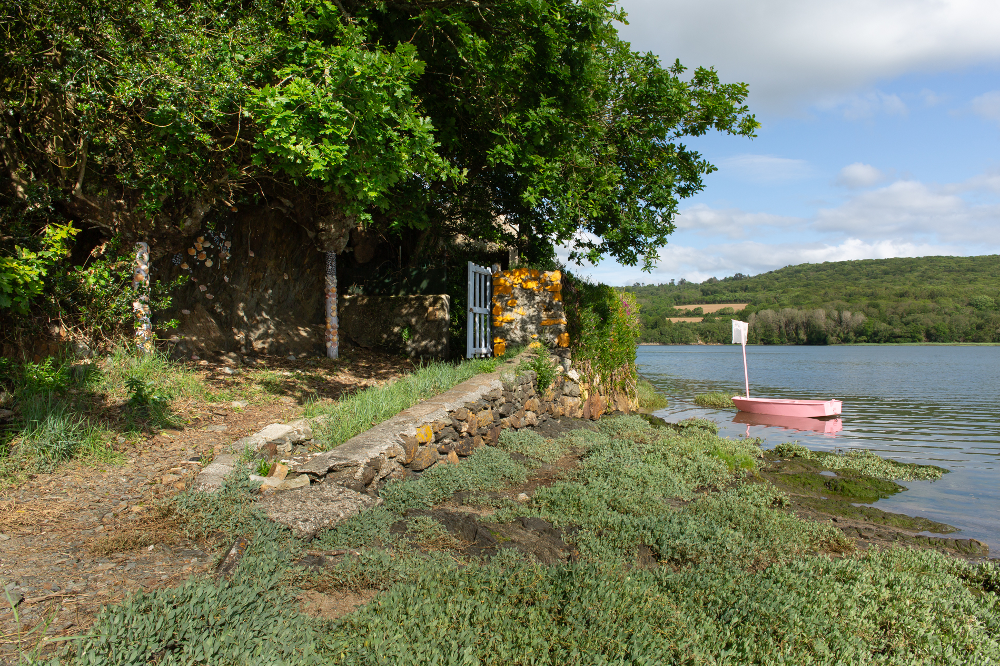
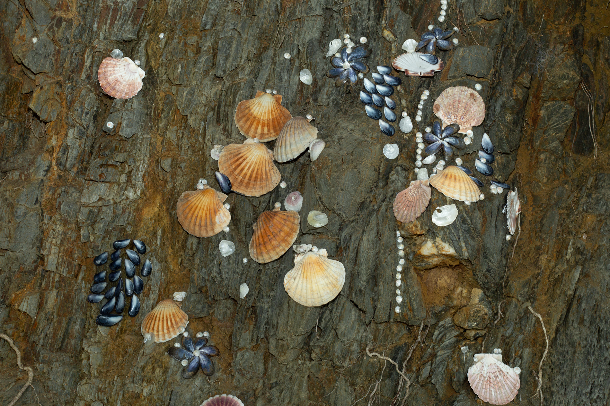
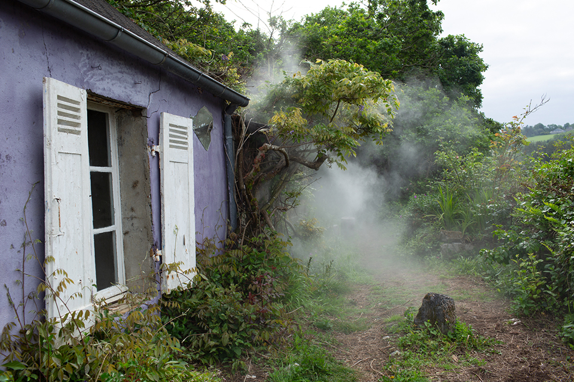
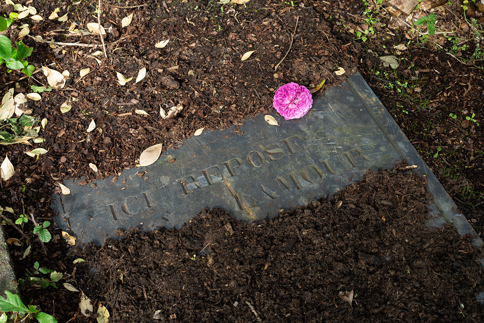

Optimist, shells weaving, song by R. Kirov, cloud, paintings, planted flowers, intervention on a tomb
Soñj festival, Landerneau-Daoulas Land
Grève de La Foest Landerneau
Summer 2024
Delphine Bertrand aime se raconter des histoires. À Ty Naot le premier élan poétique est venu des charmes de la marée. Puis le terme maison du passeur l'a renvoyée aux mythes dans lesquels les passeurs font aussi traverser les âmes. La grotte lui en a rappelé une autre, la « Chambre d'Amour » à Anglet. Selon la légende deux amants s'y sont noyés après s'être jurés un amour éternel. Riche de ces fragments d'histoires, Delphine a pensé une œuvre sur l'amour et l'au-delà. Pendant son processus de travail une pierre tombale jusque-là cachée par les broussailles est découverte dans le jardin. Elle n'en retient que quelques mots, comme une confirmation : « Ici repose Lamour ». Aidée de Robert Kirov, Delphine cherche dans son installation à intensifier l'expérience des lieux pour inciter les visiteur·euses à fabuler, comme elle. Elle ne livre pas un récit en tant que tel, et se détache d'une relation au patrimoine qui serait de transmettre le passé. L'histoire est plutôt un écart, une reprise, un débordement qu'elle s'autorise à partir des objets de mémoire.
-----------------------------------------
Delphine Bertrand enjoys telling herself stories. At Ty Naot, the first poetic impulse came from the charms of the tide. Then the term «house of the ferryman» sent her back to myths in which ferrymen also guide souls across. The cave reminded her of another, the «chambre d’amour» in Anglet. According to legend, two lovers drowned there after pledging eternal love. Rich with these fragments of stories, Delphine conceived a work about love and the afterlife. During her creative process, a tombstone previously hidden by bushes is discovered in the garden. She only retains a few words, as a confirmation: «ici repose lamour» «here lies love». With the help of Robert Kirov, Delphine seeks to intensify the experience of the places in her installation to encourage visitors to fantasize, like her. She does not deliver a narrative as such, and distances herself from a relationship with heritage that would be about transmitting the past. The story is more of a deviation, a reinterpretation, an overflow that she allows herself based on objects of memory.
Text written by Marie Adjedj for Soñj Festival
Photographs : Margot Montigny, Bruno Peinado, Robert KirovDelphine Bertrand enjoys telling herself stories. At Ty Naot, the first poetic impulse came from the charms of the tide. Then the term «house of the ferryman» sent her back to myths in which ferrymen also guide souls across. The cave reminded her of another, the «chambre d’amour» in Anglet. According to legend, two lovers drowned there after pledging eternal love. Rich with these fragments of stories, Delphine conceived a work about love and the afterlife. During her creative process, a tombstone previously hidden by bushes is discovered in the garden. She only retains a few words, as a confirmation: «ici repose lamour» «here lies love». With the help of Robert Kirov, Delphine seeks to intensify the experience of the places in her installation to encourage visitors to fantasize, like her. She does not deliver a narrative as such, and distances herself from a relationship with heritage that would be about transmitting the past. The story is more of a deviation, a reinterpretation, an overflow that she allows herself based on objects of memory.
Text written by Marie Adjedj for Soñj Festival









